拜訪上帝的部落，司馬庫斯

目錄
在2020年末，與朋友決定在新年連假拜訪上帝的部落，司馬庫斯。
整趟行程驚喜連連，也危機(?)重重，首先先來介紹一下司馬庫斯到底是什麼東東：
司馬庫斯在哪裡
司馬庫斯（泰雅語：Smangus），位於台灣新竹縣尖石鄉，是在雪山山脈主稜山腰的一個泰雅族部落，海拔約1500公尺，居民全為泰雅族原住民。
據說，泰雅族祖先原居住於台灣中部山地，但由於人口逐年增加，族人開始往外地遷移，其中一支由馬庫斯率領的隊伍便遷往此地，就是現今的司馬庫斯部落。
居民早期主要以農業為主，但近年來觀光業開始發展，便轉向以觀光業為主。
回到目錄
行程介紹
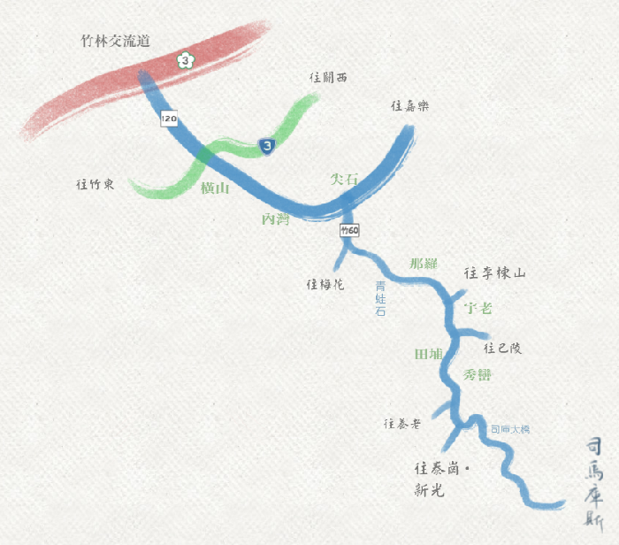
圖片來源: 司馬庫斯官網
1/1, 2021(五)
- 一早從台北出發前往新竹
- 11:00 先到新竹內灣休息吃東西
- 13:00 吃完午餐後，繼續前往司馬庫斯的路上
- 15:15 途中經過宇老觀景台
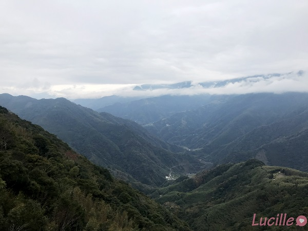
- 16:45 抵達民宿森籟園渡假民宿
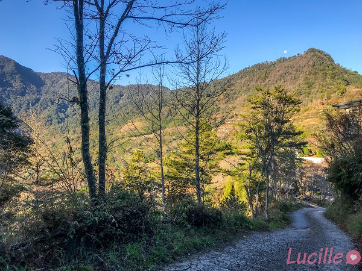
- 17:30 走路至附近鎮西堡長老教會
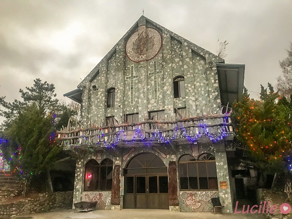
- 18:30 回民宿享用晚餐
由於山上沒有娛樂，吃完晚餐在附近晃晃散步，就早早回房睡覺
但晚上時間真的超級冷的，山上不會有暖氣這種東西，睡覺時棉被完全是冰凍的狀態❄️🌨️
不妨抬頭看看星空，在司馬庫斯光害少，星星很美哦🌟🌝
1/2, 2021(六)
- 5點多起床想在山上看日出，結果被樹擋住，什麼都沒看到😂
- 6:30 走路前往附近的新光國小
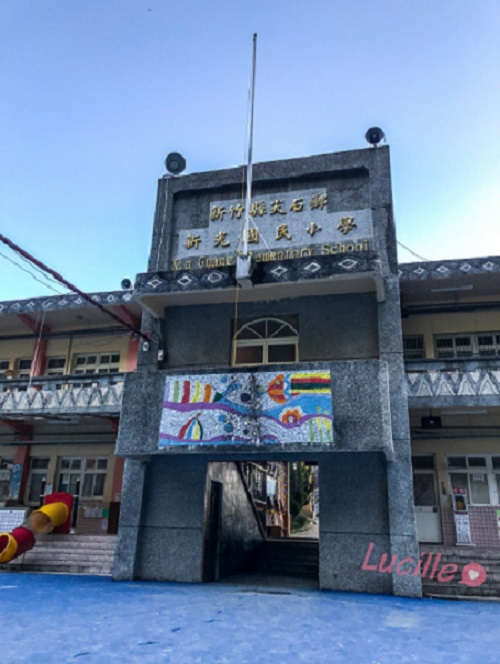
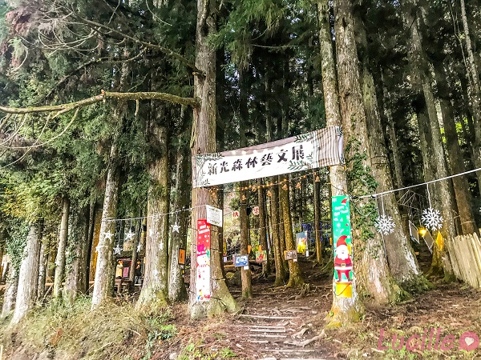
是森林教室哦~超可愛的
但下雨的話就…🤣
- 7:30 回民宿吃早餐
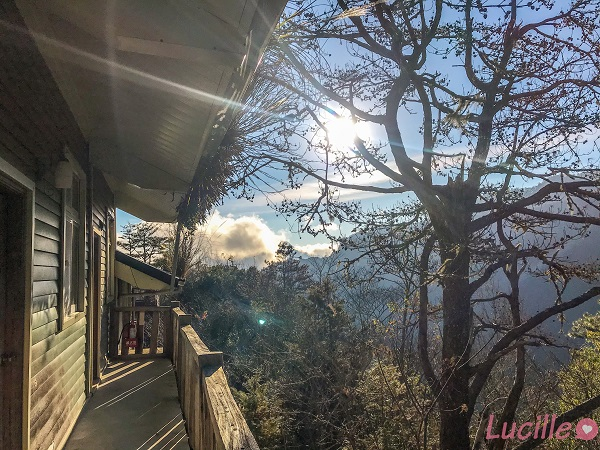
吃完民宿回到房間才發現，原來房間門口就能看到日出…🤣🤣🤣
- 8:40 出發前往期待已久的司馬庫斯啦🎉
在抵達司馬庫斯會看到上面有歡迎光臨上帝的部落司馬庫斯的字樣
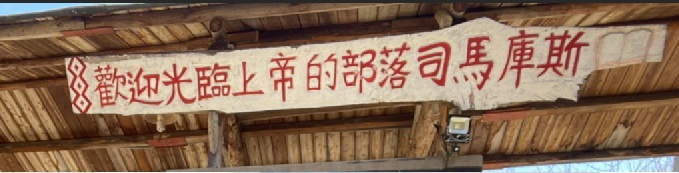
這邊要注意開車的管制時間哦，參閱交通資訊
- 9:50 抵達司馬庫斯巨木群登山口，神木我來了~~~
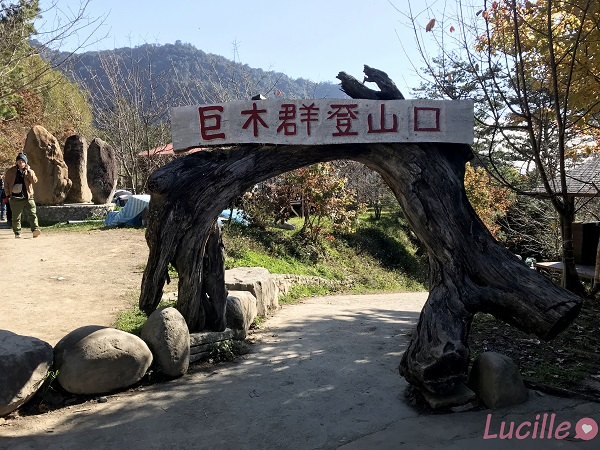
接下來就帶大家來看看，前往千年神木路上的美景：
整趟路程5km左右能抵達巨木群，路不難走，可以慢慢欣賞沿途的美景
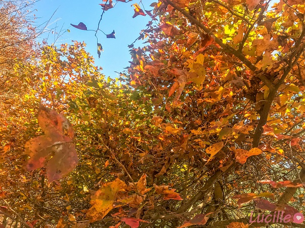
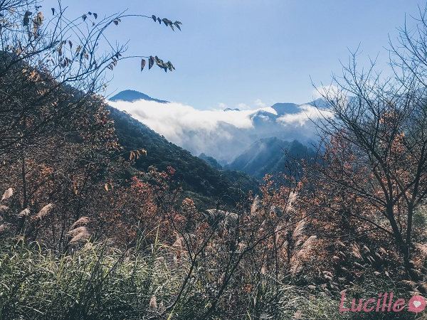
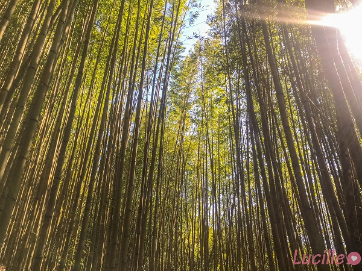
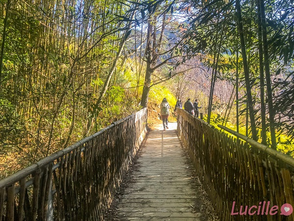
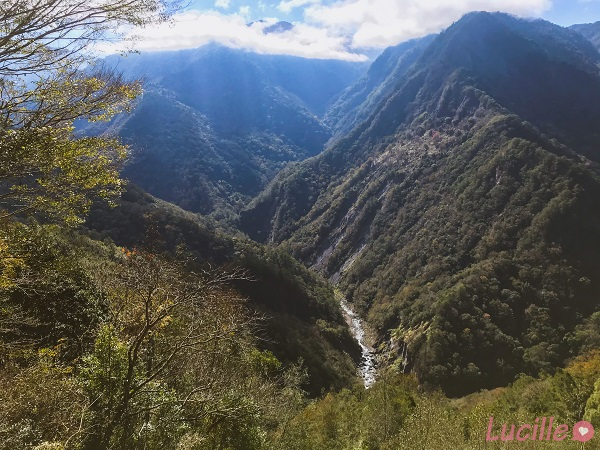
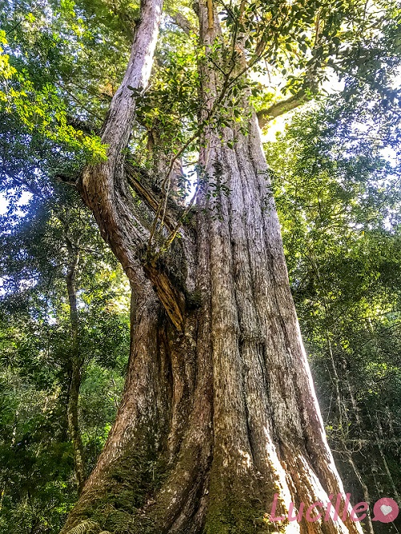
看到神木啦🎉🎉🎉
- 13:30回到巨木群登山口，我們要趕在14:00前下山
不然下一個可下山時段就要等到16:20以後了😪
回到目錄
司馬庫斯神木
司馬庫斯巨木群位部落以東海拔1,600公尺的深山中，蘊藏許多千年以上紅檜，不少神木幾乎位於新竹和宜蘭兩縣交界深山中，估計有二十餘棵超過一千年以上樹齡的神木。司馬庫斯神木群中最大的一棵是老爺神木，樹齡約有2,500年，主幹約可讓二十人牽手環抱，樹高則約十五層樓高(約35公尺)，屬於台灣紅檜木。此神木最大的特色，就是樹型是「人」的造型，樹圍20.5公尺，在台灣神木排行榜為第四名，僅次於阿里山的眠月神木、中橫神木，及排行第一的大安溪神木。除了巨木群之外，步道沿途的風景及生態亦值得觀賞。
在司馬庫斯巨木群中，主要有9棵神木，巨木群區為一個環狀步道，各位朋友只要沿著指標的方向行走，就能看到全部的巨木群。
回到目錄
住宿資訊
- 在司馬庫斯部落內，有小木屋可以選擇。
-
平日預訂平日住宿：可預訂半年內住房。
-
預訂週六、國定假日、連續假期住宿：
開放預訂的時間如下：
11/1開放隔年1、2、3月訂房
2/1開放4、5、6月訂房
5/1開放7、8、9月訂房
8/1開放10、11、12月訂房
*開放訂房日如遇周日則順延至次日 (週一) 開放
資料來源: 司馬庫斯官網
- 在尖石鄉靠近鎮西堡的地方有許多民宿可做選擇
但開車到司馬庫斯的車程會是1小時左右
我們這次是住森籟園渡假民宿：
6人房+2人房，其實大致上都還OK，民宿附早餐，晚餐可以另外預定。
回到目錄
交通資訊
在前往司馬庫斯的路，實在不好開。尤其是在司馬庫斯產業道路這段，這段路面狹窄、坡度很陡，一路上的髮夾彎也多，容易暈車的朋友要特別注意。另外也要特別注意，車況不好的話也有可能會上不去。
由於山上沒有加油站，要記得在尖石鄉加油站加滿油再上山，不然會在卡在山上沒有沒有油哦。
以下為司馬庫斯產業道路的管制規定：
管制路段：司馬庫斯產業道路（竹60線39.5K起，即泰崗岔路口至司馬庫斯部落之間路段）
管制時段
一般車輛（四輪以上）：
可上山時間：12:40以前、15:00以後
上山車輛不得在其他時間越過泰崗岔路口進入司馬庫斯產業道路
可下山時間：14:00以前、16:20以後
下山車輛不得在其他時間從司馬庫斯部落出發
中型巴士：
可上山時間：15:00至15:20
上山中巴不得在其他時間越過泰崗岔路口進入司馬庫斯產業道路
可下山時間：13:40至14:00
下山中巴不得在其他時間從司馬庫斯部落出發
資料來源: 司馬庫斯官網
停車的部分，抵達司馬庫斯後可直接開進去，主要可以停在兩處。停車費$100元，機車的話是免費。
-
進入部落大門後的部落廣場
-
神木步道入口處的停車場。
回到目錄
結語
此次的司馬庫斯兩天一夜行程，我們都相當滿意。很幸運地遇上好天氣，也有如願看到傳說中的千年神木。雖然路途甚是艱辛，但一切都很值得(感謝司機們)。
但由於只安排兩天一夜，沒有去到鎮西堡，據說鎮西堡神木不比司馬庫斯的差
不過這樣也有了下次再去的藉口，希望下次能在櫻花季的時候去囉🌸😎
回到目錄
Icon use: Love icons printed on photos created by Freepik - Flaticon